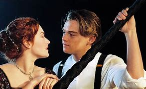

Orgulho e PreconceitoOrgulho e Preconceito, escrito por Jane Austen, é um dos romances mais amados da literatura inglesa e conta a história de Elizabeth Bennet, uma jovem de espírito independente, e de Mr. Darcy, um homem rico e reservado. Ambientado na Inglaterra do século XIX, o livro explora temas de amor, classe social, orgulho e preconceito .Elizabeth é a segunda das cinco irmãs Bennet, e suas perspectivas de casamento são uma grande preocupação para sua família, especialmente para sua mãe, que está ansiosa para ver todas as filhas bem casadas. Quando o rico e elegante Mr. Bingley se muda para uma propriedade vizinha, ele se apaixona por Jane, a irmã mais velha de Elizabeth. No entanto, o amigo de Bingley, Mr. Darcy, apesar de sua posição elevada, causa má impressão: ele é visto como arrogante e orgulhoso. Elizabeth rapidamente o julga, enquanto Darcy, em sua vez, é inicialmente desdenhoso em relação à família dela, devido à sua posição social mais baixa. Confira o trailer abaixo! |
Titanic“Titanic” é um épico romance e drama dirigido por James Cameron, lançado em 1997. O filme narra a história do famoso naufrágio do RMS Titanic, que ocorreu em 15 de abril de 1912, e entrelaça a ficção com eventos históricos. A trama centraliza-se no romance entre Jack Dawson, um artista pobre interpretado por Leonardo DiCaprio, e Rose DeWitt Bukater, uma jovem de classe alta, vivida por Kate Winslet. O filme explora temas como amor, sacrifício e as divisões sociais da época. A narrativa do filme é apresentada através de uma estrutura de flashback, onde uma equipe de exploradores marinhos, liderada por Brock Lovett, busca tesouros no fundo do oceano. Durante a expedição, eles encontram um retrato de Rose, que leva a equipe a procurar a mulher que poderia revelar mais sobre o navio e sua trágica história. A partir daí, Rose, agora uma idosa, conta sua experiência a bordo do Titanic, revelando seu amor por Jack e os desafios que enfrentaram juntos. Os personagens centrais são, Jack e Rose. |
Diário de Uma PaixãoNarrativa se desenrola em duas linhas do tempo, intercalando o presente com o passado. No presente, um idoso, Noah, lê para Allie, sua amada, em um asilo, onde ela luta contra a doença de Alzheimer e não consegue se lembrar de muitos momentos de suas vidas. Noah espera reacender as memórias dela através de suas histórias e do amor que eles compartilharam. A história principal se passa na década de 1940, quando Noah, um jovem de origens humildes, e Allie, uma jovem rica, se apaixonam durante um verão na Carolina do Norte. Apesar da forte conexão entre eles, suas famílias se opõem ao relacionamento devido às diferenças sociais. Ela é forçada a deixar Noah e retornar para casa, onde acaba se comprometendo com outro homem. Anos depois, já adulta e prestes a se casar, lê sobre Noah em um artigo de jornal, que descreve a restauração da casa que ele prometeu consertar para ela. Isso a leva a reavaliar seus sentimentos e a visitar Noah. Durante esse reencontro, os velhos sentimentos ressurgem. |
Como se Fosse a Primeira VezVeterinário que vive no Havai e tem um estilo de vida descontraído, evitando relacionamentos sérios. Sua vida muda quando ele conhece Lucy Whitmore em um café, eles têm uma conexão instantânea. No entanto, ele descobre que Lucy sofre de amnésia anterógrada, resultado de um acidente de carro, o que significa que ela não consegue formar novas memórias a longo prazo. Todos os dias, ao acordar, ela não se lembra de nada do que aconteceu no dia anterior, incluindo o encontro que teve com Henry. Determinado a conquistar o coração de Lucy, Henry decide que ele terá que se apresentar a ela todos os dias, explicando sua condição e relembrando-a do que eles compartilharam. Ele tenta criar novas experiências e momentos memoráveis para Lucy, para que ela possa se apaixonar por ele repetidamente. Enquanto Henry enfrenta os desafios de um relacionamento com alguém que não pode lembrar dele, ele também aprende sobre a importância do amor verdadeiro. |
|---|